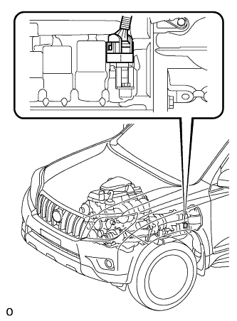

СИСТЕМА АВТОМАТИЧЕСКОЙ ТРАНСМИССИИ > ПРОВЕРКА РУЧНОГО ПЕРЕКЛЮЧЕНИЯ ПЕРЕДАЧ |
| ПРОВЕРКА РУЧНОГО ПЕРЕКЛЮЧЕНИЯ ПЕРЕДАЧ |
|  |
Отсоедините разъем жгута электропроводки трансмиссии.
Выполните пробную поездку на автомобиле с отсоединенным жгутом электропроводки трансмиссии. Устанавливая рычаг переключения передач в каждое положение, убедитесь в том, что передачи изменяются, как показано в таблице ниже.
| Положение рычага переключения передач | Передача |
| P | P |
| R | R |
| D | 4-я |
| 3 | 4-я |
| 2 | 3-я |
| L | 1-я |
Подсоедините разъем жгута электропроводки трансмиссии.
Удалите коды DTC (Нажмите здесь).